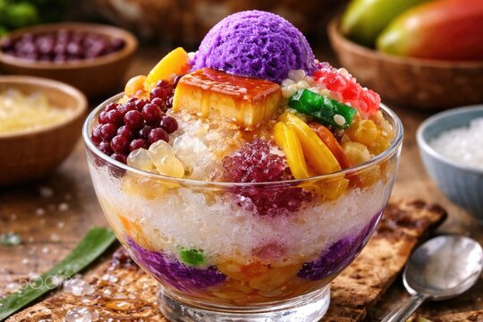

Halo-Halo is the ultimate Filipino shaved ice dessert, famous for its vibrant layers, contrasting textures, and colorfula ppearance. The name literally translates to "mix-mix" in Tagalog, which is exactly how it meant to be eaten.
You can find most of these ingredients jarred and pre-sweetened at any local Asian or Filipino grocery.